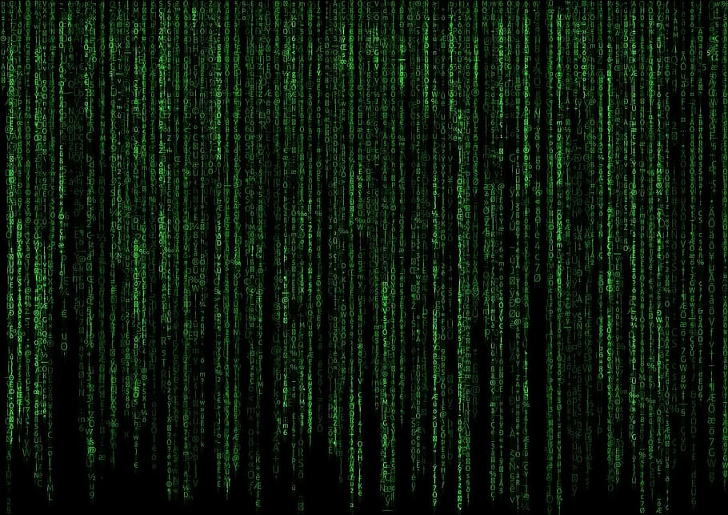

AoC day 3 using base R. I got caught in the matrix 🥲
Spoilers ahead.

Solution without commentary
Code
input<-readLines("input.txt")schematic<-matrix(unlist(strsplit(input, "")), ncol =140, nrow =140, byrow =TRUE)input_as_string<-paste(input, collapse ="")number_locations<-gregexpr("\\d+", input_as_string)numbers<-as.integer(regmatches(input_as_string, number_locations)[[1]])symbols<-regmatches(input_as_string, gregexpr("[^0-9.]", input_as_string))[[1]]|>unlist()|>unique()parts_and_stars<-Map( \(number_location, number){# Convert the first digit's index from the stringified input to its# equivalent position in the schematic/matrixrow<-ceiling(number_location/140)column<-number_location-((row-1)*140)# Bounding box. Account for boxes falling outside matrix edgesleft<-if((column-1)==0)1elsecolumn-1right<-if((column+nchar(number))==141)140elsecolumn+nchar(number)top<-if((row-1)==0)NULLelserow-1bottom<-if((row+1)==141)NULLelserow+1# Collect up characters in the boxabove<-if(is.null(top))NULLelseschematic[top, left:right]middle<-schematic[row, left:right]below<-if(is.null(bottom))NULLelseschematic[bottom, left:right]chars<-c(above, middle, below)part<-if(any(symbols%in%chars))numberelseNA# Find index of *, if it existsstar<-NAif("*"%in%above){star<-paste(top, left+(which("*"==above)-1))}if("*"%in%middle){star<-paste(row, left+(which("*"==middle)-1))}if("*"%in%below){star<-paste(bottom, left+(which("*"==below)-1))}data.frame(parts =part, stars =star)},number_locations[[1]],numbers)|>do.call(rbind, args =_)# Part 1sum(parts_and_stars$parts, na.rm =TRUE)# Part 2dupes<-parts_and_stars$stars[duplicated(parts_and_stars$stars, incomparables =NA)]gears<-parts_and_stars[parts_and_stars$stars%in%dupes, ]sum(aggregate(gears$parts, by =list(Stars =gears$stars), prod)$x)
Part 1
The problem
— Day 3: Gear Ratios —
You and the Elf eventually reach a gondola lift station; he says the gondola lift will take you up to the water source, but this is as far as he can bring you. You go inside.
It doesn’t take long to find the gondolas, but there seems to be a problem: they’re not moving.
“Aaah!”
You turn around to see a slightly-greasy Elf with a wrench and a look of surprise. “Sorry, I wasn’t expecting anyone! The gondola lift isn’t working right now; it’ll still be a while before I can fix it.” You offer to help.
The engineer explains that an engine part seems to be missing from the engine, but nobody can figure out which one. If you can add up all the part numbers in the engine schematic, it should be easy to work out which part is missing.
The engine schematic (your puzzle input) consists of a visual representation of the engine. There are lots of numbers and symbols you don’t really understand, but apparently any number adjacent to a symbol, even diagonally, is a “part number” and should be included in your sum. (Periods (.) do not count as a symbol.)
In this schematic, two numbers are not part numbers because they are not adjacent to a symbol: 114 (top right) and 58 (middle right). Every other number is adjacent to a symbol and so is a part number; their sum is 4361.
Of course, the actual engine schematic is much larger. What is the sum of all of the part numbers in the engine schematic?
Solution
Right, so in AoC day 1 I saw my first ever matrix. That means I now see matrices everywhere. reading the problem, I envision the schematic as a matrix, and there’s a bounding box drawn around each cluster of digits. The box encompasses all of the characters surrounding the digits, too. All I have to do is get the indices of the digits and it should be pretty simple maths from there.
And this is where my brain ground to a halt. I completely boxed myself in - pun not intended but very much appropriate - because I became fixated on the matrix. I didn’t want to do another list extravaganza. I kept printing the data and thinking, “It’s a fucking cube. A cube! MATRIX IS THE ANSWER!!!”
So yeah after a couple of hours trying to figure out how I would capture the digits, which reached a low point when I considered lapplying through every index in the matrix 💀, I knew it was time to look for “inspiration.”
Which came in the form of Adam Austin again. Did he use a matrix? No. But our ideas for how to solve were actually very similar. I used his approach of turning the input into a single string to unlock everything else that would make the matrix work.
That’s right. I still kept on with the matrix idea. We learn by doing hard things, right? Or by making things hard? Something like that… 😅
input_as_string<-paste(input, collapse ="")# The first position for each group of numbersnumber_locations<-gregexpr("\\d+", input_as_string)number_locations[[1]][1:10]
[1] 45 69 74 86 90 119 147 153 176 221
# The actual numbers in each groupnumbers<-as.integer(regmatches(input_as_string, number_locations)[[1]])numbers[1:10]
Once I’ve got access to all the characters in a bounding box, I’ll need to check if at least one of them is in this vector of symbols. If so, the numbers are a “part”.
parts_and_stars<-Map( \(number_location, number){# Convert the first digit's index from the stringified input to its# equivalent position in the schematic/matrixrow<-ceiling(number_location/140)column<-number_location-((row-1)*140)# Bounding box. Account for boxes falling outside matrix edgesleft<-if((column-1)==0)1elsecolumn-1right<-if((column+nchar(number))==141)140elsecolumn+nchar(number)top<-if((row-1)==0)NULLelserow-1bottom<-if((row+1)==141)NULLelserow+1# Collect up characters in the boxabove<-if(is.null(top))NULLelseschematic[top, left:right]middle<-schematic[row, left:right]below<-if(is.null(bottom))NULLelseschematic[bottom, left:right]chars<-c(above, middle, below)part<-if(any(symbols%in%chars))numberelseNA# For part 2. Find index of *, if it existsstar<-NAif("*"%in%above){star<-paste(top, left+(which("*"==above)-1))}if("*"%in%middle){star<-paste(row, left+(which("*"==middle)-1))}if("*"%in%below){star<-paste(bottom, left+(which("*"==below)-1))}data.frame(parts =part, stars =star)},number_locations[[1]],numbers)|>do.call(rbind, args =_)head(parts_and_stars)
To be fair, I think this code is actually fine. It works and makes logical sense. I wasn’t too happy about including the star bit, which is for part 2 of the problem. Originally it wasn’t a part of the Map and I had to go back and add it. I’ll explain more in a moment.
The engineer finds the missing part and installs it in the engine! As the engine springs to life, you jump in the closest gondola, finally ready to ascend to the water source.
You don’t seem to be going very fast, though. Maybe something is still wrong? Fortunately, the gondola has a phone labeled “help”, so you pick it up and the engineer answers.
Before you can explain the situation, she suggests that you look out the window. There stands the engineer, holding a phone in one hand and waving with the other. You’re going so slowly that you haven’t even left the station. You exit the gondola.
The missing part wasn’t the only issue - one of the gears in the engine is wrong. A gear is any * symbol that is adjacent to exactly two part numbers. Its gear ratio is the result of multiplying those two numbers together.
This time, you need to find the gear ratio of every gear and add them all up so that the engineer can figure out which gear needs to be replaced.
In this schematic, there are two gears. The first is in the top left; it has part numbers 467 and 35, so its gear ratio is 16345. The second gear is in the lower right; its gear ratio is 451490. (The * adjacent to 617 is not a gear because it is only adjacent to one part number.) Adding up all of the gear ratios produces 467835.
What is the sum of all of the gear ratios in your engine schematic?
Solution
A gear is a star that’s in the bounding box of two parts. I was already tracking the potential parts in the Map, so I also grabbed the indices of any star that appeared. As a reminder, here’s the dataframe I’m working with